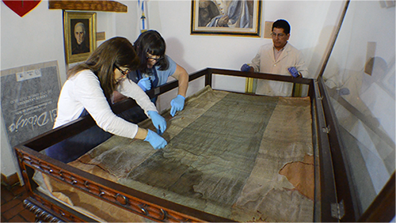

El 27 de febrero de 1812, a orillas del Río Paraná, en proximidad de la "Villa del Rosario", Manuel Belgrano enarbolaba por primera vez la Bandera Argentina.

Se trata de la insignia nacional creada por Manuel Belgrano en 1812, descubierta en una capilla boliviana, en 1883, y devuelta al país en 1896.
El 27 de febrero de 1812 el General Manuel Belgrano, en las barrancas de Rosario, a orillas del río Paraná, enarboló por primera vez la bandera argentina.